LivePL ConnectZdalny pulpit Live Production
Ostatnie połączenia
Dotknij, żeby kliknąć. Przytrzymaj: prawy przycisk. Przesuń jednym palcem: przewijanie. Dwa palce: powiększenie.
Połączenie jest szyfrowane, a obraz płynie bezpośrednio z komputera na Twój telefon.